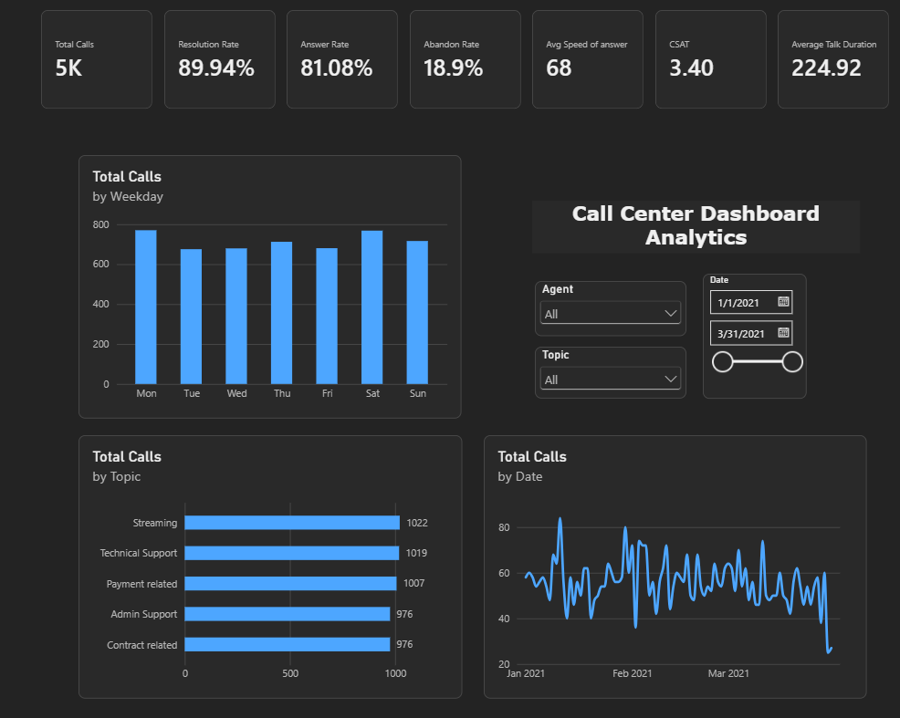
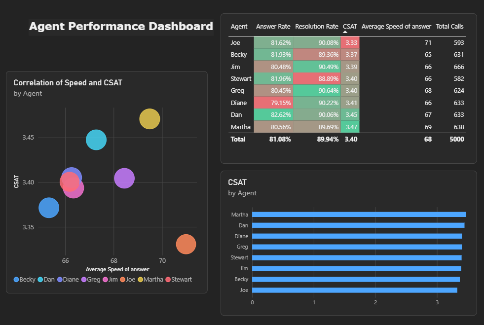
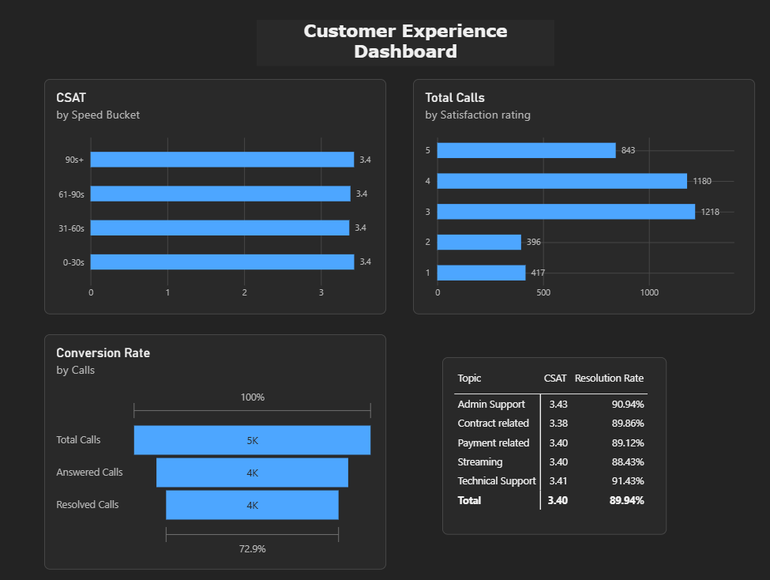

Call volume
The call centre handled 5,000 calls from Jan 1 to Mar 31, 2021.
Power BI / Telecom
A three-page Power BI report analysing call volume, agent performance and customer experience for a telecom call centre (Q1 2021, 5,000 calls).
The call centre handled 5,000 calls from Jan 1 to Mar 31, 2021.
Answer rate is 81.1%, so 946 calls (18.9%) were abandoned.
89.9% of answered calls were resolved. Across all calls, the resolution rate is 72.9%.
Average speed of answer is 68 seconds and average talk duration is 225 seconds.
Calls are spread evenly across topics: Streaming (1,022), Technical Support (1,019), Payment (1,007), Admin (976) and Contract (976).
Monday and Saturday are the busiest days and Tuesday the quietest.


Agents perform consistently: CSAT ranges from 3.33 to 3.47, answer rate from 79.2% to 82.6%, and resolution rate from 88.9% to 90.6%.
Martha (3.47) and Dan (3.45) have the highest CSAT. Joe has the lowest (3.33) and the slowest answer time (71 seconds).
Dan has the highest answer rate (82.6%) and Diane the lowest (79.2%).
Faster answers do not translate to higher CSAT: Martha has the highest CSAT despite an above-average answer time.
Overall CSAT is 3.40 out of 5. About 50% of rated calls scored 4-5, 30% scored 3, and 20% scored 1-2.
CSAT is 3.4 in every speed bucket, from 0-30 seconds to over 90 seconds.
CSAT ranges from 3.38 to 3.43. Technical Support has the highest resolution rate (91.4%) and Streaming the lowest (88.4%).
5,000 calls led to 4,054 answered and 3,646 resolved, so 946 calls were lost before being answered, against 408 answered but unresolved.
